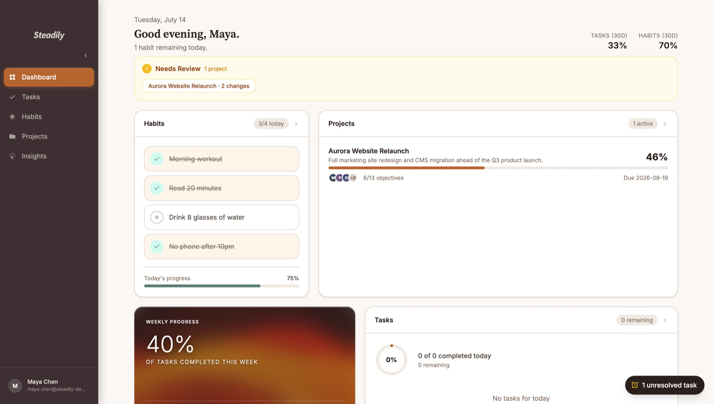
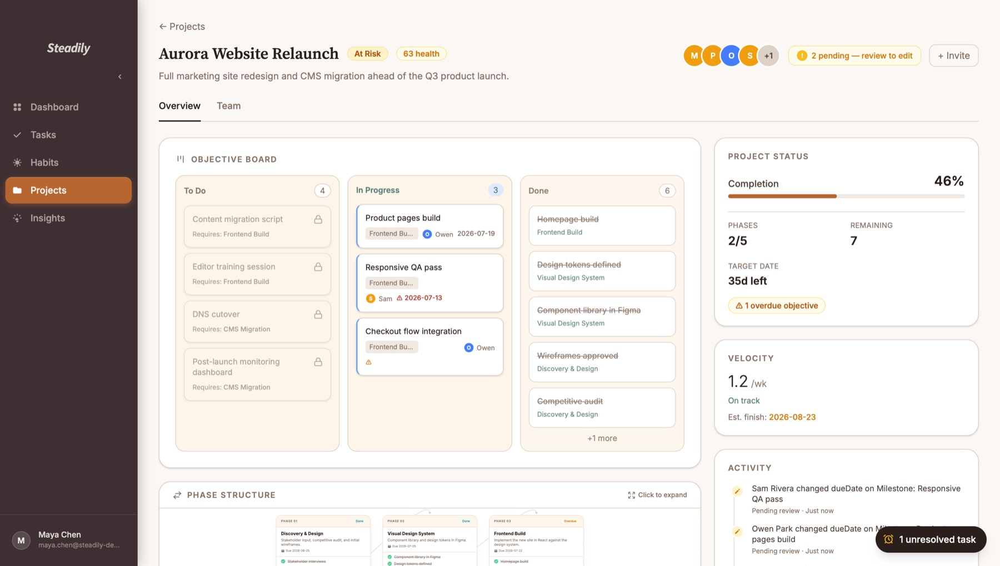
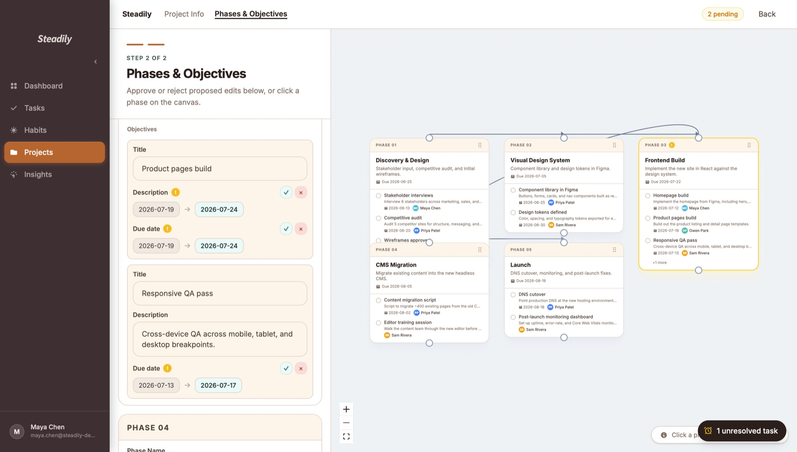
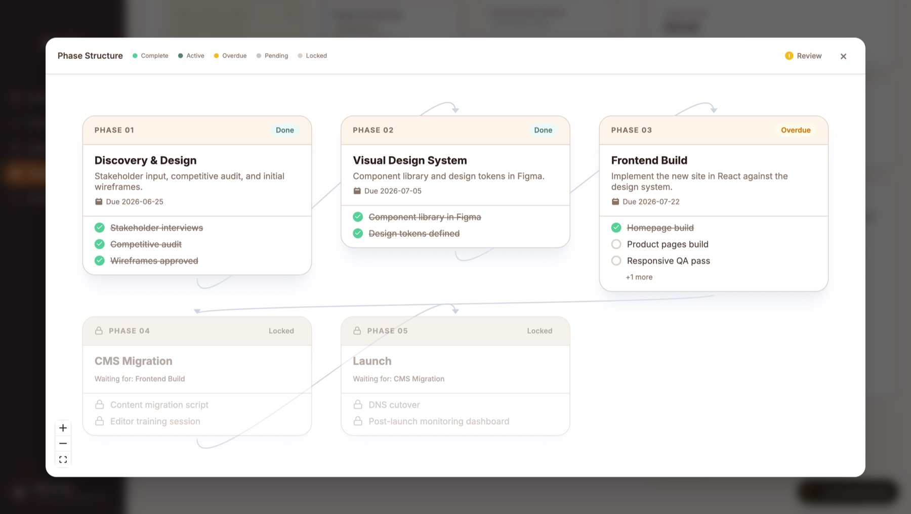

Personal Project — Active Development — May 2026 – Present
A project-management and habit-tracking app that treats team collaboration as a governance problem, not just a to-do list — every shared-project edit is diffed, routed for approval, and audited, while phase dependencies, health scores, and velocity forecasts are computed from real data rather than manually set.

Most planning tools force a tradeoff: lightweight trackers with no accountability, or heavyweight PM suites that are a chore to maintain. Teams working on shared projects also need more than a shared to-do list — they need to know who can change what, what happens when people disagree, and whether the project is actually on pace.
Maturin addresses this with real multi-user governance (roles, approvals, field-level diffing), dependency-aware phase planning, and metrics computed from actual completion and activity data instead of self-reported status. It began as a paper habit-tracker — a single sheet split between a daily habit checklist and a sleep log — that worked, but whose format didn't: filling it out each morning took just enough time, at just the wrong moment, that it was reliably skipped.
This is an active solo project, not a finished product, built to explore how much real-world governance logic — approval workflows, dependency resolution, computed trust/health metrics — can be pushed cleanly into a service layer, independent of transport and UI. Automated test coverage for the service layer is the acknowledged gap and the current focus.
Three-tier structure: a React/TypeScript frontend (routed pages, shared components, typed API client), an Express/TypeScript backend with a strict controller → service → route separation across 51 endpoints and 9 resource domains, and a PostgreSQL database (Prisma, 14 models covering users, tasks, habits, projects, phases, milestones, dependencies, memberships, invites, and pending-change tokens).
All permission and approval logic lives exclusively in the service layer — controllers and the frontend only call it and react to the result, so there is exactly one place in the system that decides who is allowed to do what. Deployed as a decoupled frontend (Vercel) and backend (Render) against a managed Postgres instance (Neon), with CI running typecheck + build on every push.


